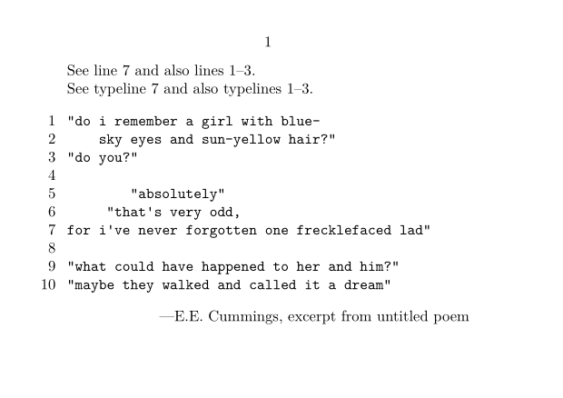
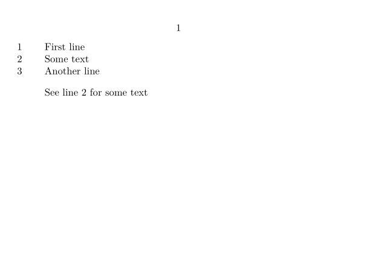

Contents
Summary
The command \inline is used to refer to numbered lines
Settings
Description
The command
\inline
inserts a reference to one or multiple lines inside a typing that has been marked with a label. The curly braces are optional and may contain a text prefix. The default prefix is "line" or "lines" (with
\mainlanguage[en]
) depending on the number of referenced lines.
Examples
Example 1
-
\setuppapersize[A7,landscape] \starttext See \inline[myline] and also \inline[myrange].\crlf See \inline{typeline}[myline] and also \inline{typelines}[myrange]. % escape=yes enables /BTEX.../ETEX \setuptyping[escape=yes,numbering=line] \starttyping "do i remember a girl with blue-/BTEX\startline[myrange]/ETEX sky eyes and sun-yellow hair?" "do you?"/BTEX\stopline[myrange]/ETEX "absolutely" "that's very odd, for i've never forgotten one frecklefaced lad"/BTEX\someline[myline]/ETEX "what could have happened to her and him?" "maybe they walked and called it a dream" \stoptyping \rightaligned{---E.E. Cummings, excerpt from untitled poem} \stoptext
- 
Example 2
-
\setuppapersize[A7,landscape] \starttext \startlinenumbering First line\crlf Some text\someline[demo]\crlf Another line \stoplinenumbering \blank See \inline[demo] for some text \stoptext
- 
Notes
See also
- page-lin.mkvi
- \startline to label a range of lines
- \someline to label a single line
- \inlinerange to refer to lines or lineranges.